像人一样思考
关注机器是否能模拟人的认知过程
例如：比较程序与人解决同一问题时的推理步骤是否相似或一致
人工智能的历史和现实
 VER. 2608
Built with impress.js
VER. 2608
Built with impress.js
如果系统决定你看到什么、去哪里、联系谁，它会怎样影响判断？
信息推荐已经影响了我们看到的信息；如果 AI 全知全能，会如何？
把智能、意识、情感表现和心理操纵放进同一个测试
能够让人相信它理解，并不等于它真的以人的方式理解
机器必须服从人吗？像人的机器是人吗？人该怎样对待它？
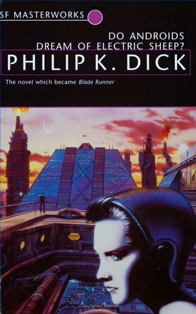
谁来决定做什么、机器能自行决定什么、出了问题谁来负责
完成本讲后，你应该能够
画出录音整理流程，再判断哪些步骤交给 AI，哪些必须由人检查
手机或录音笔保存课堂声音
语音识别先生成一份可能有错字的文本
AI 按课程顺序生成笔记草稿
人回听疑点，确认后再保存正式笔记
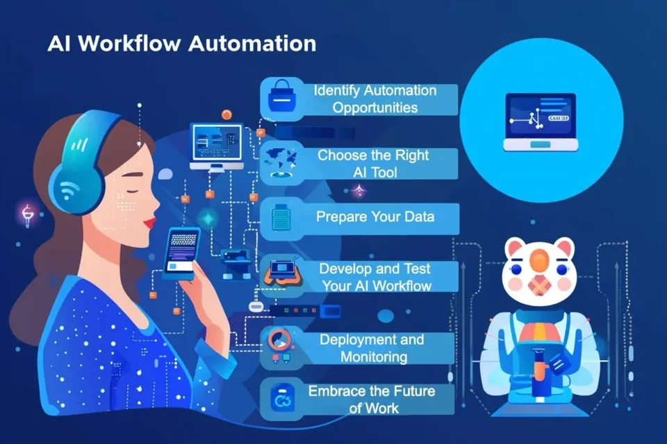
早期问“机器会思考吗”，工程研究继续问“机器看到什么、做了什么”
I propose to consider the question, “Can machines think?”
Alan Turing, Computing Machinery and Intelligence, 1950
The study of agents that receive percepts from the environment and perform actions
Stuart Russell and Peter Norvig, Artificial Intelligence: A Modern Approach
若目标是模仿人，就与人比较；若目标是做好事情，就检查推理或行动结果
关注机器是否能模拟人的认知过程
例如：比较程序与人解决同一问题时的推理步骤是否相似或一致
关注机器的外部表现能否与人相似
例如：图灵测试通过单盲方式观察人是否能通过回应区分机器和人
关注推理过程是否符合逻辑规则
例如：逻辑程序根据前提推出的结论是否能达到全局最优
关注系统能否在环境中选择有效行动
例如：前车突然刹车时，自动驾驶汽车能否及时减速并保持安全距离
它检验行为上能否区分人机，但并不能证明机器具有意识或有理解能力
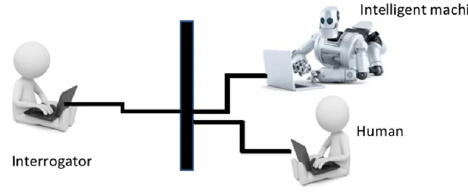
行为相似可以观察和测试，但不能单独证明机器具有意识或以人的方式理解
语音助手要识别声音、理解语言、作出选择、运行在设备上，还要让人愿意用
哲学追问意识、智能、认识与知识，数学把推理转化为计算和形式结构
经济学研究有限条件下的最优选择，控制论研究行动后反馈调节
参考神经科学的生物机制研究，和心理学对认知、学习与行为的研究
计算机工程提供实现条件，语言学解释结构与意义
AI 研究吸收其他学科的方法和成果，也影响这些学科的方向和工具
智能是什么？哪些智能形式可以被形式化？
追问心智、知识、理性、认识、真实，以及机器能否思考
把逻辑、可计算性、概率和不确定性转化为形式工具
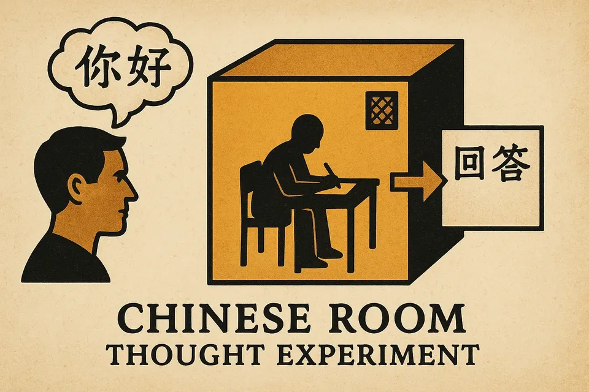
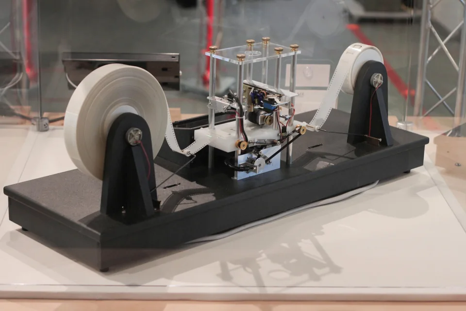
如何做出最优选择？行动和反馈之间如何连接与调整？
研究有限信息、有限资源、偏好和博弈条件下如何做出最优选择
研究系统如何围绕目标行动，并根据反馈持续调整
智能的生物学机制是什么？认知、意识、学习、情绪、行为是如何发生的？
研究神经元、连接和脑区如何共同支持智能活动
研究感知、记忆、学习的机制，以及问题解决如何影响行为
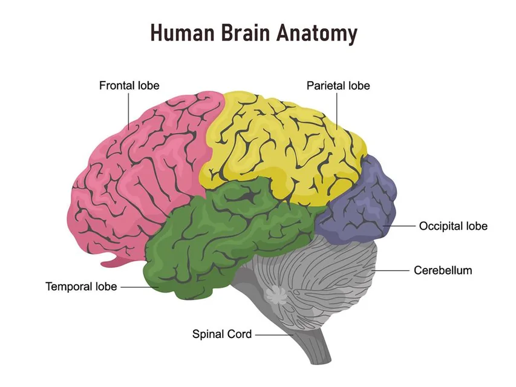
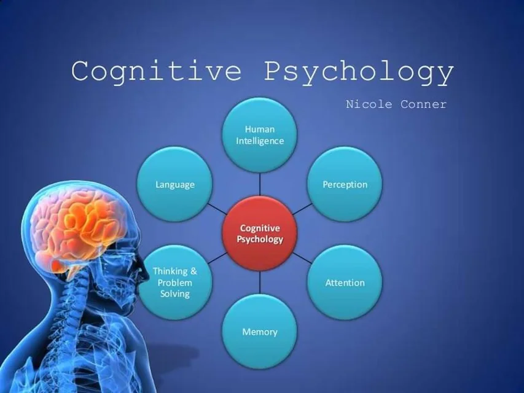
实现机器智能的物质基础是什么？语言如何承载结构与意义？
提供计算架构、存储、传感器和持续增长的算力
解释语法、语义和语用如何组织语言与知识
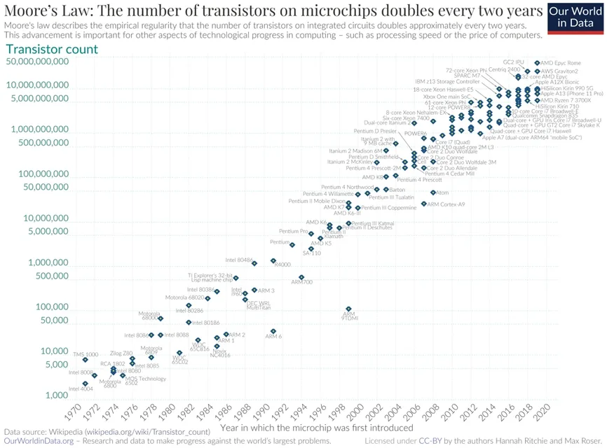
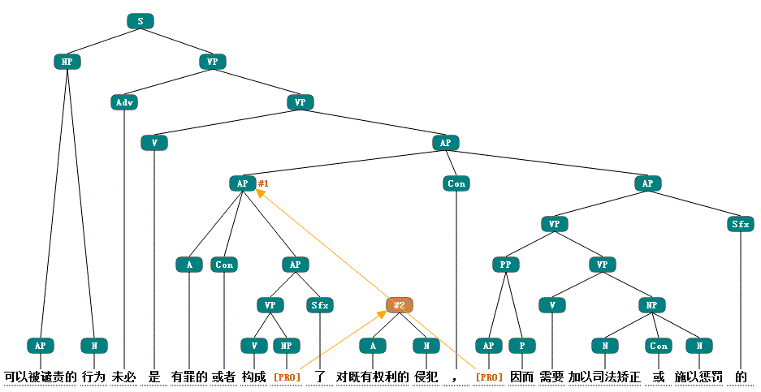
有哪些看得见的结果、用到的材料、容易出错的地方？
某客服 AI 能把语音转成文本、检索服务政策、并生成答复
能否把语音转成文字、找到对应政策并生成答复
语音识别、服务政策文档、用户问题和生成模型
口音可能听错，政策可能过期，生成的答复也可能没有依据
它实际做到了什么？以什么能力做到的？哪些工作任务还需要人检查？
看到 AI 新闻，要问它解决什么、为何现在能做到、可用于哪些任务
新的方法让机器第一次完成了哪类任务
例如：同一个大语言模型可以解释材料、提取信息、改写文本和生成草稿
数据、算力、算法和工程分别提供了什么
例如：文本集、并行计算、Transformer 和训练系统共同支撑大语言模型
演示成功，但是否能扩展到真实工作中
例如：模型可能补写不存在的事实；接入文件工具后，还可能把错误写进真实文档
计算机出现以后，智能开始逐渐被拆成表示、学习、测试和求解
人工神经元模型模拟真实神经元，把神经活动转成可计算模型
梯度下降、反向传播算法导致连接变化，可以解释经验如何改变系统
图灵极大地简化了问题，改为检查人能否从对话中分辨机器和人
程序开始尝试搜索和证明此前只能由人来完成的问题
达特茅斯会议提出，用机器模拟学习、语言、抽象和问题求解
研究者开始用“人工智能”统称这些机器智能问题
学习、语言、抽象和问题求解进入同一研究议程
受限问题中的快速进展被推向更通用的能力预期
形式推理与程序设计语言
神经网络与机器智能
信息论与博弈程序
启发式搜索与符号问题求解
早期研究让机器搜索推理，后来缩小任务，只处理诊断或计算机配置等工作
搜索、推理和积木世界推动第一次 AI浪潮
实验室里的成功无法应付真实世界，研究投入随之下降
专家系统把医生或工程师的判断写成规则，只解决一类具体问题
知识获取、维护和隐性经验成为新的瓶颈
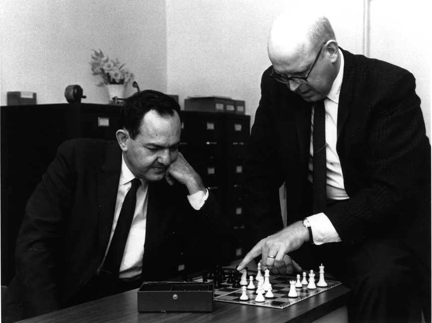
机器不再只执行人写好的规则，也开始从样本、答案和行动结果中学习
神经网络复兴，机器学习走向数据评估
行为主义机器人强调环境、行动和反馈
海量数据、基准任务和基础设施逐渐成熟
深度学习提升多媒体和文本的处理能力
大语言模型带来了新一轮 AI 爆发
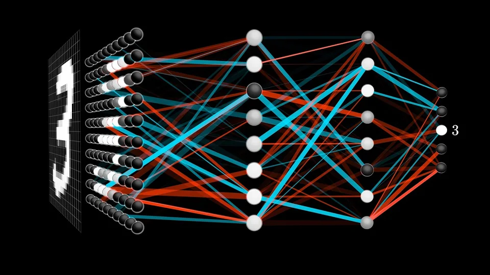
今天的机器人可能同时使用人工规则、神经网络和行动反馈，不必只归入一类
把知识写成符号、规则和逻辑关系
探索路线：把理性活动还原为可以表达和推演的形式结构
让系统通过数据调整连接并形成表示
探索路线：让能力从大量样本和连接调整中逐渐形成
让系统在环境中行动并根据反馈改进
探索路线：通过感知、行动和反馈形成适应环境的能力
符号、连接与行动，是人类探索机器智能的三大基本方向
系统的能力来自预先编码的知识表示和推理规则
把事实、概念和关系转化为机器可以处理的符号结构
按照明确的显式规则，从已知条件推出结论
常识、惯例、例外和直觉经验很难全部提前写成规则
符号系统只能使用人已经写清楚的事实和规则
把推理、规划和语言任务转化为符号操作与搜索
在候选路径中寻找可以达到目标的步骤
代表成果：通用问题求解器 General Problem Solver
按照逻辑规则从已知条件推出结论
代表成果：能够证明数学定理的 Logic Theorist
在受限环境中整合语言、规划和行动
代表成果：能够理解指令并操作积木的 SHRDLU
符号主义认为，智能活动是可以用符号表示、按规则推演的形式系统
系统在设计环境中表现不错，但难以泛化
只能处理设计者提前设计的对象和操作
SHRDLU 在积木世界表现出色，离开预设对象便难以工作
算力、数据和工程无法处理开放世界
早期神经网络缺少足够数据与算力，难以扩展到真实感知任务
实验成功，人们误以为能处理所有问题
早期机器翻译技术实际质量远远没有达到预期目标
在积木世界会按指令搬方块，但无法理解真实世界中的房间
研究者尝试将 AI 能力加在现有管理系统上
MYCIN 把细菌感染与抗生素选择知识写成一条条医疗规则
MYCIN 根据症状和检验结果匹配规则，推导诊断建议
XCON 只为 DEC 的 VAX 计算机生成配置方案，范围非常窄
专家系统的规则推理与管理信息系统结合，诞生了决策支持系统
专家系统只能使用已经写成规则的知识，而专家常常凭多年经验处理例外
专家的经验可能带来直觉
访谈、整理和核对规则都很耗时
直觉和例外难以说清，却常常影响判断
状况超出规则时，系统难以可靠判断
没有被记录在资料里的经验，大语言模型也无法凭空获得
一个解决思路：把领域知识显式表示、组织起来，并让系统据此推理
把经验、事实和规则从人的头脑中外化为系统可以处理的形式
让对象、属性和关系能够被查询、组合和复用
知识表示可以与数据库、搜索、机器学习和大模型结合
专家系统尝试了如何让计算机可以处理的数据表示知识
即使模型可以从数据学习，人们仍会用明确的实体和关系组织知识
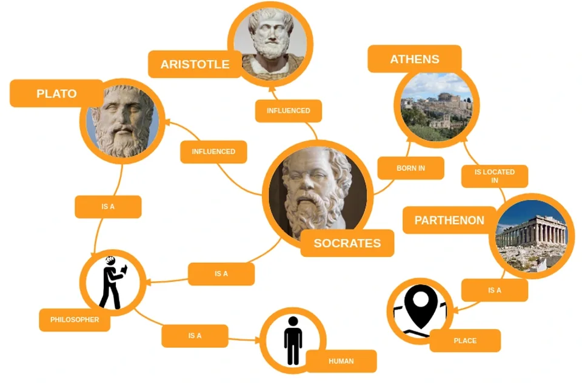
新方法并不总是完全淘汰旧方法，更多时候是在不同环节重新组合
研究者开始用数据集、指标和盲测比较系统在新样本上的表现
从样本中估计规律和不确定性
用统一任务比较不同方法
系统能否处理训练数据之外的新样本
早期 Google 翻译从大规模语料中的统计规律出发，有效提升了翻译准确率
通过训练调整连接权重，并从数据中逐渐形成表示
“我们所知最好的学习机器是人脑”
Geoffrey Hinton，多伦多大学访谈
知识分布在连接权重中，因此用于训练的数据非常重要
机器学习从样本和反馈中自动调整模型
“机器学习研究的是能够通过经验自动改进的计算机算法”
Tom Mitchell，《机器学习》，1997
机器学习把一部分规则从人工编写转移到数据、目标和训练过程
系统获得的答案、结构或奖励不同，学习任务也不同
“与其编写模拟成人心智的程序，何不尝试模拟儿童的心智？”
Alan Turing，《计算机器与智能》，1950
样本同时提供输入和目标答案
根据带标签的历史邮件学习识别垃圾邮件
系统从没有标签的数据中发现结构
根据购买记录发现具有相似行为的顾客群
系统通过行动获得奖励并调整策略
通过游戏得分反馈学习更有效的行动策略
监督答案、模式识别和行动奖励，构成了三种不同的学习反馈模式
探索环境、尝试行动，从错误中学习，进而改变环境
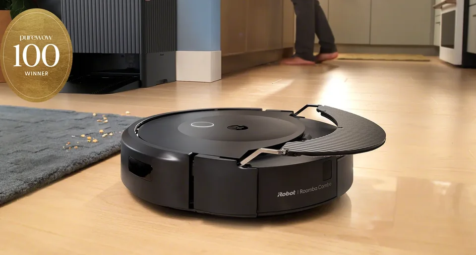
智能表现为系统是否能在变化的环境中持续调整行动
多层网络在数据和算力支持下，学习复杂输入中的表示
系统从数据中逐层形成有用特征
大型数据集提供更丰富的训练样本
专用硬件加速大量矩阵和向量运算
多层神经网络可以提取特征，但依赖数据量、算力和数据与任务的相关程度
多层表示学习让模型能够直接处理更复杂的原始信号
从像素中逐层学习边缘、形状与对象特征
例如：识别生产线照片中的表面缺陷
从波形中学习音素、节奏与声学模式
例如：把课堂录音转写成文字
从词元序列中学习语义、语境与表达关系
例如：判断用户评论的情感倾向
多模态系统也同样会学到资料里的偏差
方法积累需要与数据规模、计算能力和工程工具同时相遇
计算设备昂贵，数据规模有限，训练周期漫长
算力增长、互联网数据和并行计算共同降低训练门槛
模型处理更多输入后，出现难解释、难核对的问题
人把判断写清楚，但例外太多时很难维护
机器从样本学习，但数据选错就会学偏
能处理图像、声音和文字，但给出的理由可能不可靠
模型开始读写文件和调用工具，做错一步就会改动真实资料
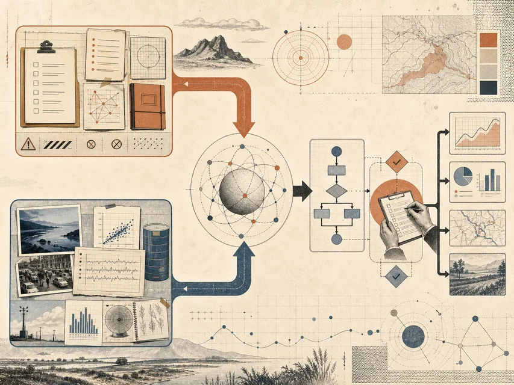
换材料、换现场，并明确错误处理流程
总结一份课程讲义成功，不代表不会出错
用新材料再试，例如比较表格和扫描件
用有缺陷的真实输入测试，并观察异常
确定责任，并保留人工接管的方法
将 AI 用于真实任务前，要广泛测试，并写清处理预案
列出任务要用到什么资料或反馈，最容易在哪一步失败
规则明确且需要解释每一步判断
拥有大量已标注的历史图像
能够反复观察环境、行动并获得反馈
明确的规则、高质量的数据、重规划能力
同一大语言模型可解释、生成、改写和比较文字，但每次都要提供任务材料
说明概念、材料和方案之间的关系
例如：向刚入学的研究生解释强化学习，并给出一个生活例子
形成文本、代码、图像或结构化草稿
例如：根据访谈记录生成一份三段式会议纪要，加粗重点和待办事项
完成改写、翻译、提取和格式迁移
例如：把以下表格数据改写为适合汇报的三条结论，使用金字塔原则
根据上下文比较候选方案并给出步骤
例如：比较两个方案要花多少钱、失败后可能损失什么、分别适合什么情况，并给出选择依据
模型学过语言，却只看到当前对话材料；查最新资料或改文件还要使用工具
模型参数提供一般语言知识；课程文本要放进当前对话；处理由其他软件管理的数据时，还要给它合适的工具并检查结果
不会编程的人也能描述目标，但自然语言的模糊性仍然是问题
“把这份材料整理好”到底是什么意思？
用日常语言表达意图和修改要求
不会编程的人也可以先说目标，再根据草稿继续修改
同一句话可能隐藏不同标准、范围
“整理好”可能指摘要、校对、重新排版，也可能被误解成补写内容
自然语言降低了表达门槛，但并没有降低对理解能力的需求
先说明要整理什么、哪些内容不能改、最后交成什么样，以及怎样核对
将下方课堂录音转写整理为结构清楚的 Markdown 文档：保留讲授顺序，不补写原文没有的事实；按主题设置二、三级标题；提取概念、例子、争议和结论
首次出现的关键概念写成 [[概念名]]，文末列出相关概念；听不清、术语不确定或来源缺失处标为 〔待核对〕；输出前检查标题层级、链接与原文可追溯性
课堂录音转写：{{在此粘贴转写稿}}
明确保留讲授顺序、不补写事实，并标出听不清的地方
是草稿，还是操作，还是会带来现实后果
AI 可能补写没有讲过的理论，或者把过期资料当成当前事实
例如：模型可能把教师未提及的理论或事实补进课堂笔记
如果允许直接写文件，它可能覆盖原始转写稿或改已有笔记
例如：拥有文件写入权限的智能体可能覆盖原始转写稿
如果没有核对就完全采纳，错误可能进入讲义、报告
例如：课程笔记最终是否完整全面，仍然需要用户复核并修改
AI 能操作的东西越多，越要保留工作过程、可回退的路径，和确认闸门
模型生成内容，工具做操作，智能体选择下一步，工作流安排步骤和参与者
根据输入生成预测、文本或其他输出
例如：用语言模型根据课堂转写稿生成课程笔记提纲
完成有明确输入和结果的外部操作
例如：用语音识别工具将课堂录音转写为带时间戳的文本
围绕目标选择行动并根据反馈调整
例如：让智能体读取转写稿、术语表和现有笔记，生成 Markdown
组织人、模型、工具、脚本和检查点
例如：把上传、转写、整理、人工复核和归档组织成可追踪流程
它读取任务，选择下一步，调用工具，再根据结果决定继续还是停止
查看用户要求和当前文件
分解任务并选择下一步行动
调用工具、脚本或外部系统
读取操作结果和错误信息
继续下一步，或者停下来请人处理
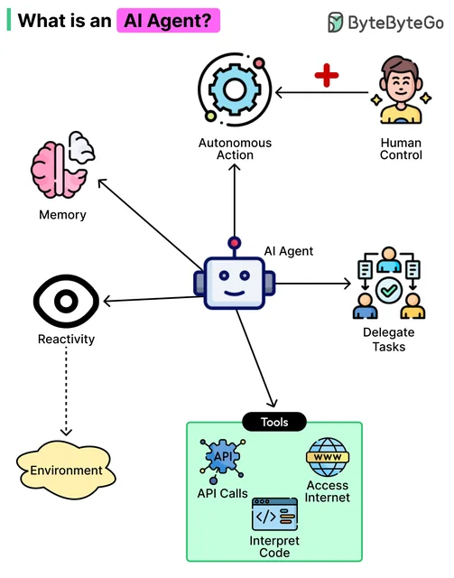
要做什么、能读写什么、遇到什么情况必须停下来等待进一步信息
最后需要哪份文件，怎样才算整理完成
例如：交付一份按讲授顺序整理、没有补写事实的 Markdown 笔记
列出允许读取的材料和允许写入的位置
例如：只读取本节录音与课程资料，只写入草稿文件，不覆盖原始材料
遇到听不清、术语不确定或找不到来源时，不要猜测
例如：标出原始位置和待核对词语，请用户确认后再继续
写清交付文件、可读写位置和停止情况，比“帮我整理好”更可靠
不要只保存最后的笔记，还要保留原文、处理中间文件和核对记录
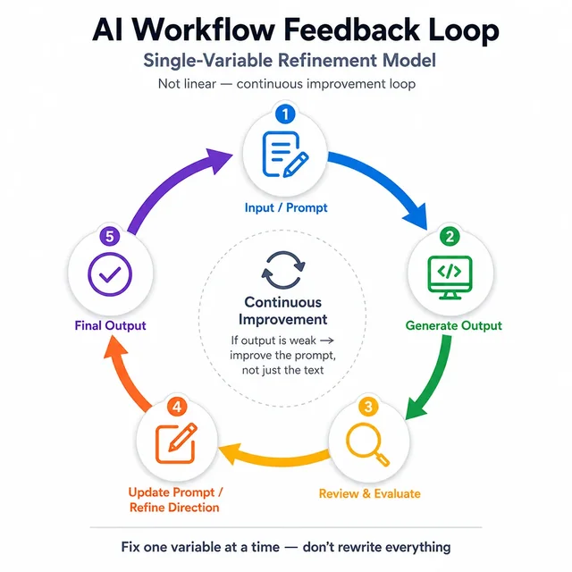
论文 PDF、问题清单、笔记模板
解析结构，定位方法、结论与局限
论文提纲、证据摘录、待核实问题
对照原文，核对概念与论证关系
带准确引文和页码的论文笔记
保留过程材料，才能查出错误发生在哪一步，也才能改进
一个常见任务可以被拆成连续、可检查的中间步骤
以课堂录音为原始材料
语音识别把声音转成可处理文本
AI 按提示词将文本生成笔记草稿
用户检查错词、遗漏；判断重点
输出讲义、复习材料或 Skill
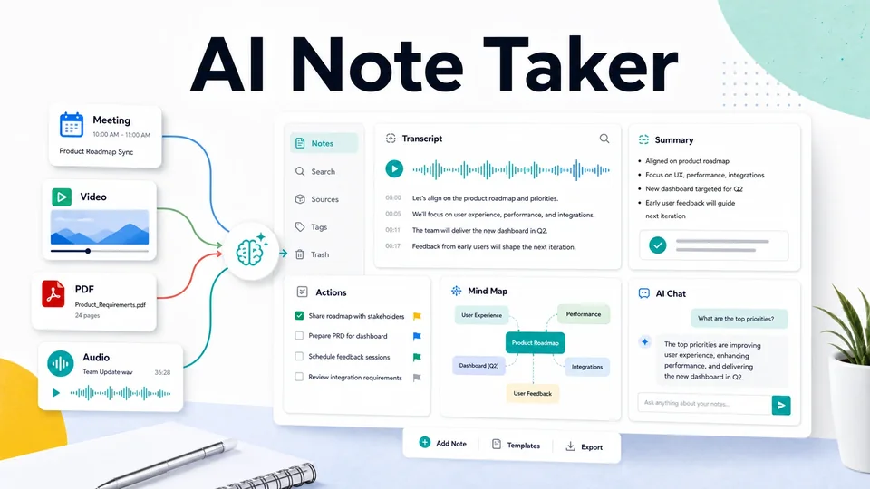
保留录音、转写稿和结构化笔记，才能知道错误在哪一步出现
保留录音、课程内容文本和相关资料
判断遗漏发生在采集阶段还是处理阶段
明确列出错词、断句和识别遗漏
可以逐段回听并定位错误的原始位置
呈现概念层级、重点与结论
可以检查内容是否忠实于原始材料
每个步骤都要留痕；中间产物越清楚，错误越容易被定位
保留每一步使用的材料和产生的文件，别人才能看懂、核对并再次使用
明确呈现输入、步骤、中间产物、输出
管理者和协作者能够看见任务如何推进
错误可以定位到具体工作节点
复核者无需从最终答案反推问题原因
稳定步骤可以沉淀为模板、脚本或 Skill
其他人可以沿用既有流程完成同类任务
新人可以沿着现成步骤完成任务，不必全靠熟练者口头带领
从明确目的开始，以解释和应用结果结束，并引出下一个问题
数据分析是为了理解什么问题
从可信来源获取所需数据
处理无关、缺失、重复与异常数据
选择方法，并保留可复算过程
解释结果，以结论支持决策
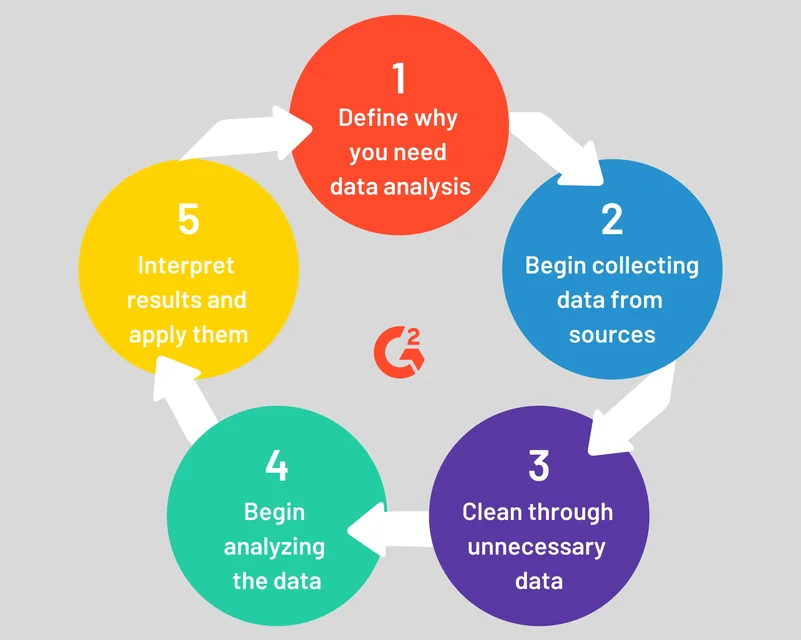
找方向、批量处理、决定结果能不能采用，适合交给不同的人或工具
找数据、提出分析方向、发现可能的关系、进一步补充数据
例如问卷分析，先确认研究问题、字段含义和可能的比较方向
清洗数据、处理重复数据、生成可复算图表、尝试多种展示
把已经明确的处理规则写成脚本，批量执行并保留过程记录
来源是否可信、异常是否保留、结论支持什么和不支持什么
人工核对异常样本，并判断数据能否支持准备表达的结论
哪些步骤需要提出方案，哪些可以重复执行，哪些必须由人作决定
处理模糊问题、生成候选方案、把规则转成草稿
提出分析方向、建议可能的数据来源，标出还缺什么材料
完成规则明确、重复发生、可以精确验证的操作
批量去重、统一格式、按照固定规则运算并生成可视化图表
这次分析要解决什么问题，哪些数据可信，并确认最终结论
决定哪些证据可信、哪些例外保留、最终结论如何表达
三种情况不能采用 AI 输出：无法独立核对、错误后果严重、必须有人承担责任
能否回到原文、原始数据或其他方法检查
越缺少独立检查方法的过程，越需要人工逐项核对
错误是否会造成的时间、金钱或安全损失
医疗、财务和管理决策需要更严格的多方面复核
最终决定是否需要有人解释并承担后果
需要签字和解释的结果，不能交给人工智能来生成最终结果
越难核对、错了后果越严重、越需要有人负责，越不能省略人工复核
AI 没按预期完成任务，用户没说明信息来源和内容处理流程
整理一份高质量论文笔记
每条结论标注页码，无法核对的内容列入待确认清单
人明确验收标准，脚本检查确定规则，人复核无法自动验证的结果
使用 AI 时，要拆开任务，决定每步交给谁，并在写文件或采用结论前检查
它能从材料中识别、生成或行动，但只完成工作中的一部分
它做成了什么、为什么现在能做到、换到哪里会失败
模型生成，工具操作，智能体选择下一步，工作流安排全程
保存输入、中间文件、核对记录和最终输出
有效使用 AI 的关键，是写清要求、保留依据、限制可改内容，并由人确认